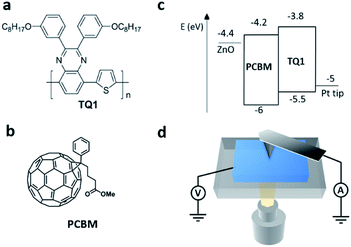
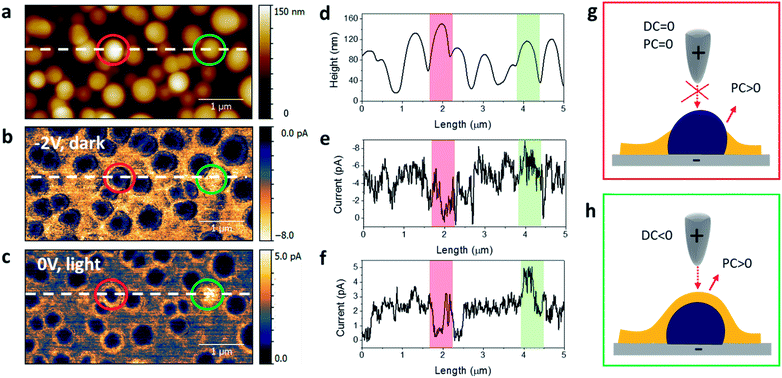
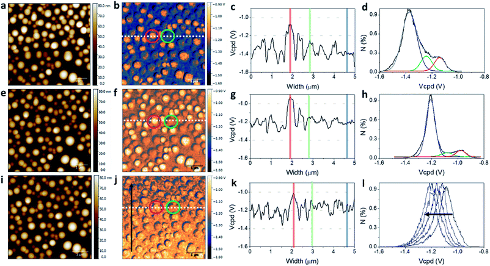
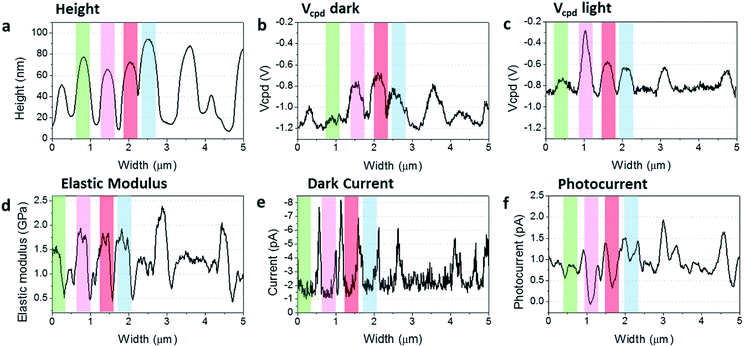

Open Access Article
Open Access Article This Open Access Article is licensed under a
This Open Access Article is licensed under a Creative Commons Attribution 3.0 Unported Licence
Multiparameter investigation of bulk heterojunction organic photovoltaics†
Chiara Musumeci‡
 a,
Riccardo Borganib,
Jonas Bergqvista,
Olle Inganäs*a and
David Haviland*b
a,
Riccardo Borganib,
Jonas Bergqvista,
Olle Inganäs*a and
David Haviland*b
aBiomolecular and Organic Electronics, IFM, Linköping University, 58183 Linköping, Sweden. E-mail: oling@ifm.liu.se
bNanostructure Physics, KTH Royal Institute of Technology, 10691 Stockholm, Sweden. E-mail: haviland@kth.se
First published on 29th September 2017
A key parameter to improve the performance of organic solar cells is the optimization of electronic phenomena at donor–acceptor interfaces through the optimization of the morphology of the bulk heterojunction. The correlative mapping of morphological, electrical and mechanical properties at the nanoscale by advanced scanning probe microscopy techniques allows for a detailed characterization of the local structure–property relationships in bulk heterojunctions solar cells. Unique opportunities for the investigation of these photoactive films are shown here, ultimately suggesting fundamental guidelines toward the accurate engineering of these materials at the nanoscale.
Introduction
Tremendous effort in the development of new materials and optimization of device performance has resulted in the fabrication of organic solar cells with record power conversion efficiency exceeding 10%, making them a promising alternative to conventional silicon-based photovoltaic devices.1 In the most common configuration, organic solar cells consist of a phase-segregated blend of electron acceptor and electron donor materials with different HOMO–LUMO levels, forming what is called a bulk heterojunction (BHJ). In a functional device, excitons generated by light absorption diffuse towards the interface between the two phases, leading to charge separation and the generation of free electrons and holes. The performance of BHJ solar cells depends not only on physical properties intrinsic to the organic materials, such as light absorption and charge mobility, but also on the morphology of the blend. Thus, the film deposition procedure is key to optimization of electronic phenomena at donor–acceptor interfaces.2 Phase separation of the order of a few nanometers and continuous domains of the electron and hole conductors are needed to reduce charge recombination, improve charge separation, and ensure continuous pathways for electron and hole transport to their respective electrodes. The development of high-resolution techniques to image these nanometer-scale domains and accurately characterize their morphology and local electrical properties, is an important goal for achieving a better understanding of the physical limitations of BHJ solar cells.The high lateral resolution and wide variety of physical imaging capability of scanning probe microscopy make it a perfect candidate for reaching this goal. Advanced scanning probe techniques, such as Kelvin probe force microscopy (KPFM),3 scanning tunneling microscopy and spectroscopy (STM and STS),4 and conductive and photoconductive atomic force microscopy (C-AFM and PC-AFM), have given valuable information about both the phase separated morphology and the local electrical properties at the nanometer scale.5–11 The importance of scanning probe microscopy is demonstrated by a large effort to push existing limits and develop new techniques aimed at obtaining more information with increased resolution.
For example, recent high-resolution AFM studies employing ultrasharp AFM probes (diameter ∼ 1 nm) to image mechanical response, have visualized the surface and internal 3D morphologies of PTB7:PCBM blends with sub-10-nanometer resolution.12 Polarization-dependent, photoconductive atomic force microscopy (PD-PC-AFM) with ∼20 nm resolution has also been reported,13 showing significant spatial dependence of the nanoscale photocurrent with polarized light due to the local alignment of the transition dipoles at a molecular level.
For the local nanoscale characterization of BHJs the blend is deposited on a high (low) work function electrode, matching the HOMO (LUMO) level of the donor (acceptor) component. In C-AFM and PC-AFM experiments the tip is normally coated with Pt or Au. Therefore, whereas a high work function bottom electrode is used, the system functions as a hole-only device. Hole current is mainly detected in the dark due to higher hole conductivity of the donor component.14 In the inverted configuration, when a low work function material is used for the bottom electrode, in principle both hole and electron transport can be observed.15 Imaging photocurrent distribution may be accomplished by aligning a C-AFM probe at the center of an externally illuminated area, which generates enough photocurrent signal to facilitate imaging at modest current levels.16 The local photocurrent measured by PC-AFM is normally in good qualitative agreement with the bulk external quantum efficiency (EQE).16
KPFM was used to measure the surface potential and the photoinduced surface photovoltage with a lateral resolution better than 100 nm in organic blends, using a frequency modulation technique in ultrahigh vacuum.17 Time resolved Electrostatic Force Microscopy (trEFM) measures photo-induced charging rates with 50–100 nm resolution, showing that these rates can be used to map the local EQE of organic blends.18,19 We recently demonstrated Intermodulation Electrostatic Force Microscopy (ImEFM)20 for mapping surface potential. This alternative to KPFM maps surface potential in a single-pass without voltage feedback and with improved signal-to-noise ratio for a given measurement bandwidth. The method uses two drives at different frequencies to extract surface potential from a calibrated measurement of electrostatic force at intermodulation (mixing) frequencies near resonance. Measuring near resonance enhances force sensitivity, and because the method senses the force gradient very close to the surface, it gives higher lateral resolution than standard implementations of KPFM.
Multifrequency measurement of force can also be used to characterize the nano-mechanical response of soft materials. Intermodulation AFM (ImAFM) utilizes a multifrequency mechanical drive force to probe the nonlinear tip–surface interaction, enabling the extraction of much more information about the mechanical response in a given measurement time. Fitting the multifrequency response to tip–surface interaction models, we can extract parameter maps describing the mechanical response of the surface.21
In the present work we investigate and compare several different scanning probe methods to characterize the local properties of bulk heterojunction blends consisting of poly(2,3-bis-(3-octyloxyphenyl)quinoxaline-5,8-dyl-alt-thiophene-2,5-diyl) (TQ1) donor and [6,6]-phenyl-C61-butyric acid methyl ester (PCBM) acceptor (Fig. 1). The ease of synthesis of the TQ1 polymer and its stability in air,22,23 as well as the possibility of modulating the phase separation of polymer–PCBM blends at different scale range24 make this blend a good model system for comparing the different methods, and evaluating new characterization techniques.
|  | ||
| Fig. 1 Chemical structures of the TQ1 donor (a) and PCBM acceptor (b) molecules. (c) Energy levels of the materials used in this study. (d) Schematic of the SPM setup. | ||
{kind=link}
Results and discussion
The morphology of these films is similar to the one already observed for other polymer–PCBM blends. Whereas films cast from “good” solvents such as chlorobenzene generally show a rather smooth film structure, blends cast from “poor” solvents, such as toluene, feature large (several hundred nanometers) dome-like PCBM-rich domains surrounded by the polymer-rich matrix.25 This morphology is believed to originate from the liquid–liquid phase separation occurring during the film deposition, which results in PCBM-rich droplets in a polymer-rich solution, that persist until the film is dry.26 As mentioned earlier, the morphology of the active layer has a large impact on the performance of the devices. Photo conversion efficiency from chlorobenzene-cast films exceed that of devices prepared from toluene, with lower photocurrents obtained in the latter.27 The presence of large clusters of PCBM which limit charge generation due to reduced interfacial area27 and a lack of interconnected electron and hole conducting phases, are the main causes of low photocurrent in toluene cast blend films.25 Despite being detrimental to the performance of devices,28 well-separated phases can be useful as test samples for evaluating and testing new experimental procedures and methods. In this spirit, we use TQ1/PCBM blends processed from toluene, forming films with distinct phase separation.In a first set of measurements we show that by using a combination of several different methods, we can correlate measurements of dark current, photocurrent, surface potential and photovoltage, as well as nanomechanical properties and topography, all on the same TQ1:PCBM blend cast from toluene. This comparison could not be made on the same area as different cantilevers are required for the static contact modes (C-AFM and PC-AFM) from those used for the dynamic modes (ImAFM, ImEFM). To mitigate this problem and compare response from the very same area, we use an all-dynamic approach, comparing surface potential measured using ImEFM, with mechanical response using ImAFM and quantitative imaging (QI) modes.29 The QI mode acquires a full quasi-static force–distance curve at every pixel and since it does not scan over the surface in constant contact, the wear of the sample is very limited.
Fig. 2 shows the topography, dark current and photocurrent maps of the TQ1:PCBM blend on a ZnO/ITO electrode. The PCBM-rich domains appear almost identical in the topography, but they can appear very different in the dark current and photocurrent images. Dark current images (Fig. 2b and e) obtained at a bias of −2 V applied to the bottom electrode, show homogenous current distribution over the polymer-rich regions in between the domains. Most of the PCBM-rich domains show almost null current (e.g. red circle), but some domains show current values similar to the polymer-rich matrix (e.g. green circle). Similarly, the photocurrent, measured at zero bias under illumination (Fig. 2c and f), is detected in the polymer-rich region. No photocurrent is measured on top of most of the PCBM-rich domains and higher photocurrent is detected in interfacial regions surrounding the domains (e.g. red circle). Larger photocurrent is also observed on top of some of the domains (e.g. green circle). These current values correspond to current densities several orders of magnitude higher than the one observed in planar devices (see the estimated current density maps in the ESI†), as a consequence of the different geometry of the contact.30
|  | ||
| Fig. 2 Topography (a), dark current (b) and photocurrent (c) maps of the TQ1:PCBM blend on ZnO/ITO electrode. The dashed lines mark the position of the respective section profiles shown in (d–f). (g) and (h) show pictorial schemes of two different arrangements of PCBM-rich domains with respect to the polymer matrix, possibly corresponding to different current response highlighted by the red and green circles respectively in images (a–c). | ||
{kind=link}
The collection of photogenerated charges is expected to be most efficient at the interface between the PCBM-rich domains and the polymer-rich matrix, where excitons are separated into free carriers.16 Indeed, we see enhanced current around the domains with width of these interfacial regions as resolved in the images as small as ∼20 nm. That the contrast in the PC-AFM images is the result of local variations in film absorption has been previously ruled out by experiments at various excitation wavelengths on similar systems.16 The contrast may instead be the result of local differences in charge transport due to changes in the vertical separation of the two components. Changes in the thickness of the polymer layer on top of the dome-like domains, result indeed in a change in the tip-sample energy barrier for charge extraction (see Fig. 2g and h). However, one should be conscious with such interpretation as mechanical wear on the apex of the conductive tip can give rise to image artifacts.
Maps of the contact potential Vcpd = ϕsample − ϕtip measured with ImEFM are shown in Fig. 3. This technique required changing to a different type of cantilever, so images are shown on a different area of the same sample. Images show a contrast similar to the dark and photocurrent maps obtained with PC-AFM. Some of the PCBM-rich domains show a lower contact potential with respect to the surrounding matrix (red marks), and some of them show a contact potential more similar to the one of polymer-rich matrix (green marks). The dark contrast has been explained with the alignment of the donor and acceptor energy levels with the Fermi level of the bottom electrode.31 A deeper analysis can be carried out by looking at the section profiles and contact potential distributions. The distribution of contact potential, i.e. the histograms of the number of pixels N with given contact potential, shown in Fig. 3d, can be fitted by three Gaussian curves centered at −1.37 V (blue), −1.24 V (green), and −1.14 V (red). By comparing these values with the Vcpd maps (b, f, j) and their respective section profiles (c, g, k) it is possible to assign the three values to the polymer matrix (blue), the polymer covered PCBM-rich aggregates (green), and the uncovered domains (red), respectively. Upon illumination, the average contact potential is shifted towards lower values (i.e. higher work function). The contact potential distribution (Fig. 3h) corresponds again to the sum of three Gaussian curves, in this case centered at −1.21 V, −1.08 V and −0.98 V, implying a 0.16 V shift, as a result of an electron enrichment at the surface. Electron enrichment at surface demonstrates the presence of electron traps by oxygen when measurements are performed in air. An opposite behavior could be observed indeed when KPFM measurements were performed under oxygen-free controlled atmosphere.31
|  | ||
| Fig. 3 ImEFM of the TQ1:PCBM blend in dark (a–d), under white light irradiation (e–h) and immediately after light irradiation (i–l). The different panels refer to: height images (a, e, i), contact potential maps (b, f, j), section profiles along the lines marked in the contact potential maps (c, g, k) and contact potential distributions (d, h, l). The distributions in (d) and (h) can be described (R2 > 0.98) as the sum of three Gaussian curves whose color code correspond to different regions highlighted in the section profiles. The different distributions in (l) are taken at different location of the map in (j), showing the change of surface potential with time during scanning. The arrows in (j, l) indicate the scanning direction. | ||
{kind=link}
When the light is switched off, charges recombine, the contrast between the two phases is attenuated and the contact potential appears homogeneously distributed over the whole area. This behavior is also visible from the contact potential distributions in Fig. 3l. After being exposed to light irradiation, the sample re-measured in dark shows contact potential distributions featuring single peaks, centered at Vcpd decreasing from −1.09 V to −1.21 V in the time frame of one image scan. Notably, imaging the contact potential of the same sample after 24–48 h gave a contrast similar to the one in Fig. 3b. When the illumination is turned off, all photogenerated charges should escape via the bottom electrode. However, the incomplete recovery of the initial situation implies the presence of long-lived, trapped electrons in the active layer. The immediate shift in Vcpd observed as soon as the illumination is turned off shows that some charges recombine quickly, in particular from the uncovered PCBM-rich regions, but a much slower recovery results from the release of charges trapped in the polymer layer.
Finally, we compared the contact potential maps with the mechanical properties of the same sample. Since the setup for ImEFM and ImAFM is the same, in this case we could obtain correlated information on the same area of the film. It is interesting to observe that the map of elastic modulus (E) has a contrast similar to the contact potential map (compare Fig. 4b and e). Again, some of the PCBM-rich aggregates show a higher E (red marks) and some others a similar E (green marks) with respect to the TQ1-rich area. The histogram of the elastic modulus values in the scan region indeed shows three peaks, centered at 0.6 GPa, 1.2 GPa and 1.8 GPa. The stiffest regions are arising from the PCBM-rich domains, while the intermediate modulus from the TQ1 polymer. The peak at 0.6 GPa corresponds to interfacial regions at the edges of the globular domains, which appear black in the modulus map of Fig. 4b. The fact that these regions appear softer is likely ascribed to different contact mechanics at the edges, and not necessarily describing some softening phenomena at the interface. The modulus of the clusters does not appear to be uniform but rather having a finer pattern, reflecting a gradient in the composition of the PCBM-rich domains. The elastic modulus of pure PCBM films has been reported to be ∼12 GPa,12 while modulus of ∼1 GPa has been observed for polymers.12 Consistently, phases consisting of mixtures of PCBM and TQ1 show intermediate moduli. Similar behaviour was observed for PCBM:PTB7 blends, where the PCBM-rich aggregates showed E of 3–7 GPa.12 The adhesion force map (Fig. 4f) shows a distinct contrast between the polymer matrix and the regions where PCBM-rich domains are present, but the contrast between uncoated and coated PCBM-domains is not so definite as in the other properties maps. The coating of the PCBM domains by the polymer layer results in only small differences in adhesion (see Fig. 4g), it is not therefore possible to distinguish these two regions from the adhesion force distribution. The latter shows indeed two peaks, centered at 4.01 nN and 4.85 nN, which correspond to the PCBM-rich regions and the polymer matrix, respectively.
 | ||
| Fig. 4 ImAFM images of the TQ1:PCBM blend measured in the same area as Fig. 3. (a) Height image, (b) elastic modulus map, with corresponding section profile (c) and modulus distribution (d); (f) minimum force map (adhesion force) with corresponding section profile (g) and adhesion force distribution (h). The red, green and blue curves in (d) and (h) are the deconvolutions (R2 > 0.98) of the respective distributions. The contact potential map in dark is reported for comparison in (e), (see also Fig. 3b). | ||
The use of ImAFM and ImEFM in the previous approach allowed us to directly correlate two different properties of the photoactive film, such as contact potential and elastic modulus, on the same area. In the next approach, we bring forward the multi-parameter characterization capabilities of scanning probe microscopy, and combine these two techniques with a quantitative imaging (QI-AFM) mode. In this way, we establish an all-dynamic protocol, allowing for a correlative study of several properties at the nanoscale, namely, surface potential measured using ImEFM, mechanical response using ImAFM and dark and photocurrent using QI-AFM modes.
Fig. 5 shows images corresponding to five different scans performed on the same region of the same film. It is interesting to correlate the contrast obtained on single clusters in the different images, as the direct comparison of multiple quantities allows to identify more subtle differences among the different domains. To this purpose, we selected four different domains, marked by green, pink, red and light blue. Their respective section profiles are reported in Fig. 6. The most striking contrast differences are observed for the contact potential (Fig. 5b and c) and photocurrent (Fig. 5f) maps, while smaller differences are shown in the elastic modulus (Fig. 5d) and dark current (Fig. 5e) maps. None of these properties seems to have a dependence on the domains height or size.
 | ||
| Fig. 5 Comparison of multiple quantities measured on the same area of a TQ1:PCBM blend deposited on ZnO/ITO from toluene: (a) topography; (b) contact potential in dark and (c) in light; (d) elastic modulus map; (e) dark current measured at a bias of −2 V applied to the ITO electrode; (f) photocurrent measured at 0 V bias. The height image in (a) was taken simultaneously to the map in (b). The height images corresponding to the other scans are reported in the ESI.† | ||
|  | ||
| Fig. 6 Section profiles of several quantities, corresponding to the maps in Fig. 5: (a) height, (b) contact potential difference in dark; (c) contact potential difference under illumination; (d) elastic modulus; (e) dark current at −2 V; (f) photocurrent at 0 V. The coloured marks correspond to the ring marks in Fig. 5. | ||
{kind=link}
In the Vcpd maps, the domain marked in green has the same color contrast of the polymer matrix and this similarity is well visible also from the relative section profile. All the other domains show decreasing contact potential difference going from the blue to the pink, and to the red. The green-marked domain also shows a lower elastic modulus and a lower photocurrent compared to the others, which is in agreement with a situation where a thick layer of polymer is coating the PCBM-rich domain. In case of a thinner coating indeed a stronger contribution from the stiffer domains underneath is expected, but for a relatively thick one the measurement of the modulus is more representative of the polymer itself. A thick polymer coating is also expected to suppress photocurrent extraction due to exciton recombination, thus explaining the lower current values observed in the photocurrent map.
The other three domains have the same elastic modulus, however their contrast in the Vcpd maps and in the photocurrent maps is different. In particular, the domain marked in pink has the lowest photocurrent but the largest shift in Vcpd with light. Both these properties indicate that no polymer layer is present on top of this domain. The other two domains, show an intermediate behavior, indicating that the PCBM-rich domains are covered by a thin layer of polymer film. However, the fact that the one marked in light blue shows the highest photocurrent indicate that the thickness of the polymer layer covering this domain is optimal to the transport of the separated charges to the electrodes.
These results indicate that scanning probe microscopy is a powerful toolbox not only to have information on surface properties. Beyond imaging lateral phase separations in bulk heterojunctions, the combined use of different techniques could also give some insights on the bulk properties of these systems, and give guidelines to carefully engineering the vertical phase separation between the donor and acceptor layers.
Polymer-enrichment at the free surface due to surface energy minimization has previously been reported for several similar systems.32 Since the polymer has a lower surface energy than fullerene, it tends to accumulate at the air surface, to reduce the overall energy of the blend film, leading to a layered phase separation. One can then imagine to make use the method here proposed to have information on the degree of vertical separation, i.e. the appropriate thickness of polymer overlayer, necessary to optimize the performance of the active blend.
One should be aware, however, that whereas finer phase separation are present, more complex 3D models need to be considered, which may involve calibration measurements on different neat layers and model multilayers.33,34
Experimental
PC61BM (purity 99.5%) was purchased from Solenne BV. TQ1 with average molecular weight of 87 g mol−1 and polydispersity index 2.5 was prepared accordingly to previously reported procedure.23 ZnO nanoparticles dispersion (2.5% wt in 2-propanol) was purchased from Nanograde.The ITO/glass substrate was cleaned by using detergent and TL-1 treatment, a mixture of water, ammonia (25%), and hydrogen peroxide (28%) (5![[thin space (1/6-em)]](./rsc_paper3_files/char_2009.gif) :1:1 by volume). The cleaned ITO glass was transferred into a glove-box filled with N2, where the ZnO layer and active layer were deposited. ZnO (nanoparticles 2.5% wt in 2-propanol) was spin-coated on top of the cleaned ITO glass substrates and annealed for 20 min at 100 °C. The active layer was spin-cast from a TQ1:PCBM 1:1 solution in toluene having a total concentration of 20 mg mL−1 at a spin speed of 3000 rpm. Solutions were kept on a hot plate at 80 °C for at least one hour and then cooled down to room temperature prior deposition.
:1:1 by volume). The cleaned ITO glass was transferred into a glove-box filled with N2, where the ZnO layer and active layer were deposited. ZnO (nanoparticles 2.5% wt in 2-propanol) was spin-coated on top of the cleaned ITO glass substrates and annealed for 20 min at 100 °C. The active layer was spin-cast from a TQ1:PCBM 1:1 solution in toluene having a total concentration of 20 mg mL−1 at a spin speed of 3000 rpm. Solutions were kept on a hot plate at 80 °C for at least one hour and then cooled down to room temperature prior deposition.
In all the measurements, the sample was mounted on an inverted optical microscope (Nikon) so that it could be illuminated through the bottom electrode using the microscope objective. The AFM (NanoWizard 3, JPK Instruments) was mounted above the sample and a probe with conductive coating was used. For the ImAFM measurements (Intermodulation Products), both the tip and the ITO electrode were electrically grounded. For the ImEFM measurements (Intermodulation Products), the ITO electrode was grounded while an AC voltage was applied to the AFM probe. Finally, in QI-mode (JPK Instruments) a DC voltage was applied to the ITO electrode while the current through the AFM tip was measured with the CAFM module. Illumination was made with a commercial low-power white LED with emission spectrum between 400 and 750 nm. The LED was coupled to a light pipe and focused on the sample surface with a 20× objective.
The dark current and photocurrent measurements in Fig. 2 were performed in contact mode using commercial Pt/Cr coated probes having nominal spring constant of 0.2 N m−1 (ElectriCont-G, Budget sensors) and the deflection setpoint corresponded to a load force of order 10 nN. A voltage was applied to the bottom electrode while the tip was kept at ground.
ImEFM measurements (Fig. 3) and ImAFM measurements (Fig. 4) were made using a multifrequency lockin amplifier (Intermodulation Products AB),35,36 using a Pt coated probe (HQ:NSC15/Pt, MikroMasch) which was calibrated using the non-invasive thermal noise method,37 giving the fundamental eigenmode resonant frequency 264.6 kHz, quality factor 331 and mode stiffness 14.6 N m−1.
For the images in Fig. 5, all methods (i.e. ImEFM, QI-mode current and ImAFM) were performed with the same probe (HQ:DPE-XSC11/C, MikroMasch) also previously calibrated using the thermal noise method (resonant frequency 162.3 kHz, quality factor 373, mode stiffness 9.67 N m−1).
For all images, dark measurements were performed first (ImEFM, ImAFM, C-AFM or QI-mode current), followed by measurements under illumination (ImEFM, PC-AFM).
Conclusions
Here we have shown a multi-parameter approach for the characterization of the nanoscale properties of organic photovoltaics. We made use of the structural and functional imaging capabilities of scanning probe microscopy to gain insights on the morphological, electronic, and mechanical properties of these photoactive films. Our results demonstrate that the simultaneous mapping of multiple properties in a correlative approach allows for a deeper characterization of the local structure–property relationships, and offers unique opportunities for the investigation of bulk heterojunctions films, ultimately suggesting fundamental guidelines toward the accurate engineering of these materials at the nanoscale.Conflicts of interest
There are no conflicts to declare.Acknowledgements
This work was funded by the Swedish Science Council VR, and the Knut and Alice Wallenberg foundation KAW through a Wallenberg Scholar grant to O. I., C. M. acknowledges Myfab and the Myfab National Access program for support and for access to the Albanova laboratory at KTH.Notes and references
- W. Zhao, D. Qian, S. Zhang, S. Li, O. Inganäs, F. Gao and J. Hou, Adv. Mater., 2016, 28, 4734–4739 CrossRef CAS PubMed
.
- Y. Liu, J. Zhao, Z. Li, C. Mu, W. Ma, H. Hu, K. Jiang, H. Lin, H. Ade and H. Yan, Nat. Commun., 2014, 5, 5293 CrossRef CAS PubMed
- F. Fuchs, F. Caffy, R. Demadrille, T. Mélin and B. Grévin, ACS Nano, 2016, 10, 739–746 CrossRef CAS PubMed
- K. Maturová, R. A. J. Janssen and M. Kemerink, Nano Lett., 2010, 4, 1385 Search PubMed
- C. Musumeci, A. Liscio, V. Palermo and P. Samorì, Mater. Today, 2014, 17, 504 CrossRef CAS
- C. Musumeci, Crystals, 2017, 7, 216 CrossRef
- O. Douhéret, A. Swinnen, S. Bertho, I. Haeldermans, J. D'Haen, M. D'Olieslaeger, D. Vanderzande and J. V. Manca, Prog. Photovoltaics, 2007, 15, 713–726 Search PubMed
- R. Berger, A. L. Domanski and S. A. L. Weber, Eur. Polym. J., 2013, 49, 1907–1915 CrossRef CAS
- R. Giridharagopal, G. Shao, C. Groves and D. S. Ginger, Mater. Today, 2010, 13, 50–56 CrossRef
- S. A. L. Weber, H.-J. Butt and R. Berger, in Scanning Probe Microscopy in Nanoscience and Nanotechnology, ed. B. Bhushan, Springer-Verlag, Heidelberg, 2013, vol. III Search PubMed
- R. Giridharagopal, P. A. Cox and D. S. Ginger, Acc. Chem. Res., 2016, 49, 1769–1776 CrossRef CAS PubMed
- D. Wang, F. Liu, N. Yagihashi, M. Nakaya, S. Ferdous, X. Liang, A. Muramatsu, K. Nakajima and T. P. Russell, Nano Lett., 2014, 14, 5727 CrossRef CAS PubMed
- C. J. Takacs, S. D. Collins, J. A. Love, A. A. Mikhailovsky, D. Wynands, G. C. Bazan, T.-Q. Nguyen and A. J. Heeger, ACS Nano, 2014, 8, 8141 CrossRef CAS PubMed
- A. Alexeev, J. Loos and M. M. Koetse, Ultramicroscopy, 2006, 106, 191–199 CrossRef CAS PubMed
- Y. Xia, C. Musumeci, J. Bergqvist, W. Ma, F. Gao, Z. Tang, S. Bai, Y. Jin, C. Zhu, R. Kroon, C. Wang, M. R. Andersson, L. Hou, O. Inganäs and E. Wang, J. Mater. Chem. A, 2016, 4, 3835–3843 CAS
- D. C. Coffey, O. G. Reid, D. B. Rodovsky, G. P. Bartholomew and D. S. Ginger, Nano Lett., 2007, 7, 738–744 CrossRef CAS PubMed
- M. Chiesa, L. Burgi, J.-S. Kim, R. Shikler, R. H. Friend and H. Sirringhaus, Nano Lett., 2005, 5, 559 CrossRef CAS PubMed
- D. C. Coffey and D. S. Ginger, Nat. Mater., 2006, 5, 735–740 CrossRef CAS PubMed
- P. A. Cox, M. S. Glaz, J. S. Harrison, S. R. Peurifoy, D. C. Coffey and D. S. Ginger, J. Phys. Chem. Lett., 2015, 6, 2852–2858 CrossRef CAS PubMed
- R. Borgani, D. Forchheimer, J. Bergqvist, P.-A. Thorén, O. Inganäs and D. B. Haviland, Appl. Phys. Lett., 2014, 105, 143113 CrossRef
- D. Forchheimer, D. Platz, E. A. Tholén and D. B. Haviland, Phys. Rev. B: Condens. Matter Mater. Phys., 2012, 85, 195449 CrossRef
- R. Hansson, C. Lindqvist, L. K. E. Ericsson, A. Opitz, E. Wang and E. Moons, Phys. Chem. Chem. Phys., 2016, 18, 11132–11138 RSC
- E. Wang, L. Hou, Z. Wang, S. Hellström, F. Zhang, O. Inganäs and M. R. Andersson, Adv. Mater., 2010, 22, 5240–5244 CrossRef CAS PubMed
- L. Hou, E. Wang, J. Bergqvist, B. V. Andersson, Z. Wang, C. Müller, M. Campoy-Quiles, M. R. Andersson, F. Zhang and O. Inganäs, Adv. Funct. Mater., 2011, 21, 3169–3175 CrossRef CAS
- H. Hoppe, T. Glatzel, M. Niggemann, W. Schwinger, F. Schaeffler, A. Hinsch, M. C. Lux-Steiner and N. S. Sariciftci, Thin Solid Films, 2006, 511–512, 587–592 CrossRef CAS
- J. J. van Franeker, M. Turbiez, W. Li, M. M. Wienk and R. A. Janssen, Nat. Commun., 2015, 6, 6229 CrossRef CAS PubMed
- H. Hoppe, M. Niggemann, C. Winder, J. Kraut, R. Hiesgen, A. Hinsch, D. Meissner and N. S. Sariciftci, Adv. Funct. Mater., 2004, 14, 1005–1011 CrossRef CAS
- Z. Wang, E. Wang, L. Hou, F. Zhang, M. Andersson and O. Inganäs, J. Photonics Energy, 2011, 1, 0111221–0111227 Search PubMed
- JPK Technical Note, QI™ mode – Quantitative Imaging with the NanoWizard®3 AFM.
- O. G. Reid, K. Munechika and D. S. Ginger, Nano Lett., 2008, 8, 1602–1609 CrossRef CAS PubMed
- K. Maturová, M. Kemerink, M. M. Wienk, D. S. H. Charrier and R. A. J. Janssen, Adv. Funct. Mater., 2009, 19, 1379–1386 CrossRef
- R. Hansson, L. K. E. Ericsson, N. P. Holmes, J. Rysz, A. Opitz, M. Campoy-Quiles, E. Wang, M. G. Barr, A. L. D. Kilcoyne, X. Zhou, P. Dastoor and E. Moons, J. Mater. Chem. A, 2015, 3, 6970–6979 CAS
- Z. Cui, J. Sun, D. Landerer, C. Sprau, R. Thelen, A. Colsmann, H. Hölscher, W. Ma and L. Chi, Adv. Mater. Interfaces, 2016, 3, 1600446 CrossRef
- Z. Cui, J. Sun, X. Niu, J. Chen, W. Ma and L. Chi, Org. Electron., 2016, 39, 38–42 CrossRef CAS
- E. A. Tholén, D. Platz, D. Forchheimer, V. Schuler, M. O. Tholén, C. Hutter and D. B. Haviland, Rev. Sci. Instrum., 2011, 82, 026109 CrossRef PubMed
- D. B. Haviland, E. A. Tholén, D. Platz and C. Hutter, Intermodulation lock-in, 2016 Search PubMed
- M. J. Higgins, R. Proksch, J. E. Sader, M. Polcik, S. M. Endoo, J. P. Cleveland and S. P. Jarvis, Rev. Sci. Instrum., 2006, 77, 013701 CrossRef
Footnotes |
| † Electronic supplementary information (ESI) available: Additional maps of multiple quantities of a TQ1:PCBM blend; determination of contact area; current density maps. See DOI: 10.1039/c7ra07673h |
| ‡ Present address: Department of Materials Science and Engineering and NUANCE Center, Northwestern University, Evanston IL, 60208, USA. |
| This journal is © The Royal Society of Chemistry 2017 |